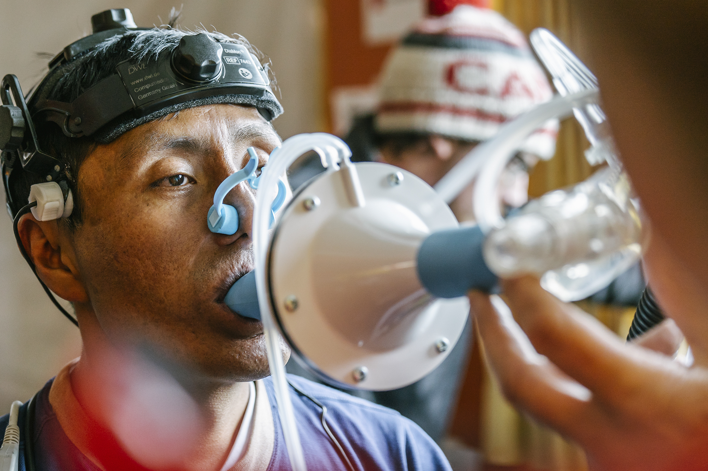
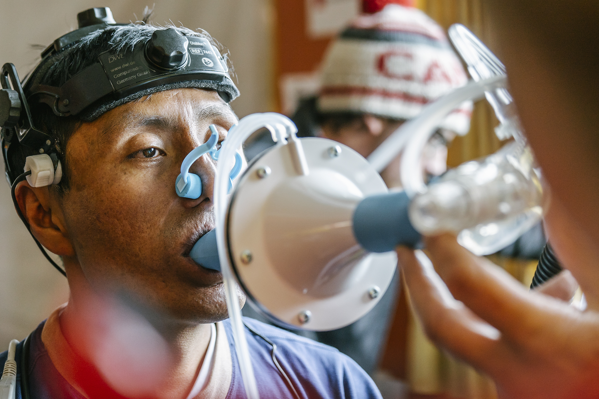

At 5100 meters elevation, a Peruvian gold mining town is the world’s highest settlement—and a good place to study how life at extremely low oxygen levels ravages the body.
12 September 2019
On a cold, grey morning earlier this year, Ermilio Sucasaire, a gold miner, sat in a white plastic chair with a stack of papers and a pen in his hand. His inquisitive eyes scanned a large room where a group of scientists were performing tests on his colleagues. One fellow miner rode a bicycle, panting heavily, electrodes attached to his chest. Another man had taken off his dirty sweater and was lying on a wooden bed, covered with blankets; a European researcher pressed an instrument against his neck while peering at a laptop.
Sucasaire was next—after he had signed a consent form and filled out a long questionnaire about his health, life, work history, family, and drinking, smoking, and coca-chewing habits. "I'm looking forward to it," he said.
The scientists, led by physiologist and mountain enthusiast Samuel Vergès of the French biomedical research agency INSERM in Grenoble, had set up a makeshift lab here in the world's highest human settlement, a gold-mining boomtown at 5100 meters in southeastern Peru. An estimated 50,000 to 70,000 people live here, trying to make it—and, many hope, strike it rich—under brutal conditions. La Rinconada has no running water, no sewage system, and no garbage removal. It is heavily contaminated with mercury, which is used to extract the gold. Work in the unregulated mines is back-breaking and dangerous. Alcohol abuse, prostitution, and violence are common. Freezing temperatures and intense ultraviolet radiation add to the hardships.
La Rinconada's most defining feature, however, the one that lured the scientists, is its thin air. Every breath you take here contains half as much oxygen as at sea level. The constant oxygen deprivation can cause syndrome called chronic mountain sickness (CMS), whose hallmark is an excessive proliferation of red blood cells. Symptoms include dizziness, headaches, ringing ears, sleep problems, breathlessness, palpitations, fatigue, and cyanosis, which turns lips, gums, and hands purplish blue. In the long run, CMS can lead to heart failure and death. The condition has no cure except resettling at a lower altitude—although some of the damage may be permanent.
CMS is a pressing health threat for the roughly 140 million people worldwide who live above 2500 meters. In Bolivia's capital of La Paz, which sits at 3600 meters, an estimated 6% to 8% of residents—up to 63,000 people—have CMS. In some cities in Peru, the rate is as high as 20%. La Rinconada is the global capital of CMS; researchers estimate that at least one in four residents suffers from the disease.
Like many chronic diseases, CMS gets short shrift from public health officials, says Francisco Villafuerte of Cayetano Heredia University in Lima. "In Peru, it's a neglected disease, despite the fact that one-third of the population lives above 2500 meters," says Villafuerte, who studies CMS but was not involved in the La Rinconada study.
A treatment could make a huge difference here and elsewhere, Vergès says. But to develop one, researchers need to understand what drives the runaway production of red blood cells, how it affects the body, and why it is a problem only in some people. Researchers also want to know what genes are involved and how recent human evolution has shaped them. A deeper understanding of CMS might help patients with cardiovascular disease, who also suffer from a lack of oxygen, says cardiologist Gianfranco Parati of the Italian Institute for Auxology in Milan, whose colleague Elisa Perger took part in the study.

To answer those questions, the INSERM team trucked scientific equipment worth €500,000 up a muddy, potholed road in February for a 12-day mission. The plan was to compare 35 men suffering from CMS, all highlanders, with 20 healthy residents and with healthy people living at lower elevations. The effort was unprecedented, scientifically and logistically. Peru has a long history of CMS research—Carlos Monge Medrano, a Peruvian doctor, first described the disease in 1925. But most scientists work in Cerro de Pasco, a mining town in the Central Andes at a substantially lower altitude, 4300 meters. Nobody had ever done a study at La Rinconada's elevation.
Sucasaire heard about the study on local radio. He was one of hundreds of residents who came to the laboratory—in a dilapidated building owned by a mining cooperative—hoping to enroll. If selected, he would undergo several days of tests, including of his blood composition and circulation; his lung, heart, and brain function; and how his body behaved during exercise and sleep.
Like others who showed up at the laboratory, however, Sucasaire also hoped to get a medical checkup and perhaps treatment. La Rinconada only has one health clinic, which can't keep up with the burgeoning population. "My knees," the 42-year-old miner said. "They're painful and swollen. I can't walk down the slopes, I can't climb the stairs. I hope the doctors can help me."
SHUT OFF A HUMAN'S oxygen supply for just a few minutes and the result is irreversible brain damage, and then death. But lower the oxygen level and we are remarkably adept at coping, at least in the short term. Yes, lowlanders who ascend to 2500 meters or higher often develop acute mountain sickness, including headaches and nausea. (Many Peruvian hotels have oxygen handy for miserable tourists.) But symptoms begin to clear within a day or two. The body adapts by making lots of extra red blood cells, which ferry oxygen attached to hemoglobin to organs and tissues.
Long-term living at high altitude is trickier. Many lowlanders have a hard time increasing their oxygen consumption enough for exercise and growth. Reproduction is especially difficult—a problem the Spanish discovered when colonizing the Andes. In pregnant women, hypoxia often leads to preeclampsia, which can endanger both mother and baby, as well as premature birth and low infant weights.
Populations that have occupied the high mountains for hundreds of generations do far better. Andeans have lived at high altitudes for 15,000 years or so, and like the inhabitants of the Tibetan Plateau and the highlands of East Africa, they have evolved to cope with hypoxia through complex physiological changes. Over the past decade, scientists have pinpointed several genes and candidate genes underlying those adaptations. They evolved independently in the three groups; in Andeans, a key adaptation is elevated hemoglobin, which enables their blood to carry more oxygen. In some people, however, the level rises out of control as red blood cells proliferate, leading to CMS.
 

That excess of red blood cells makes the blood more viscous, straining the circulatory system. (Some subjects' blood here has an almost tarlike quality, making serum samples nearly impossible to take.) Blood vessels, normally dynamic tubes that expand as needed, become permanently dilated. Blood pressure in the lungs often goes up. The heart becomes overworked.
Other high-altitude groups adapted to the low oxygen without significantly elevated hemoglobin and do not suffer as much from CMS. Tibetans, for example, cope primarily by breathing more often and taking deeper breaths. A 1998 study reported a CMS rate of only 1.2% for native Tibetans living at high altitude. In the few studies done in Ethiopian highlanders, researchers did not find CMS. In contrast, one study in Cerro de Pasco indicated a prevalence of 15% for men ages 30 to 39 and 33% for those 50 to 59.
No proven therapies are available. Phlebotomy, or bloodletting, is one remedy practiced in Peru; it relieves the symptoms for a couple of months, Villafuerte says. But the procedure is cumbersome and further deprives the body of oxygen—which could, counterproductively, spur even faster production of red blood cells.
A few drugs have been tried as well. One, acetazolamide, is also used for acute mountain sickness; it's believed to work by acidifying the blood, which stimulates breathing. In two trials in Cerro de Pasco, the drug lowered the blood's hemoglobin content and increased oxygen saturation. But even the biggest study, published in 2008, enrolled only 34 people and lasted just 3 months. Whether the long-term benefits outweigh any side effects is unclear. "You would have to take it as long as you live at high altitude," Villafuerte says.
LA RINCONADA IS A BUMPY 2.5-hour drive from Juliaca, Peru, a drab transit hub of 250,000 people at 3825 meters. Minivans charge $5 for the ride, leaving from Juliaca's bus station as soon as people and luggage have filled every available space.
Ivan Hancco, a Peruvian physician and member of the research team, first made that trip in 2007 when studying medicine in Puno, a nearby city and tourist destination on Lake Titicaca. More interested in research than clinical work, he was drawn to altitude sickness but didn't know much about La Rinconada. Few people in Peru do, he says. "I thought it was a small town. I had no idea."
Just walking down the busy main street here, Hancco could tell CMS was a much bigger problem than in Puno, 1300 meters lower. "Red eyes, purple lips and hands, you saw them everywhere," he recalls. He began to make frequent trips, first monthly and later bimonthly, to offer residents medical advice and meticulously record their complaints. It resulted in what Vergès says is a unique long-term database on CMS and other health issues that includes more than 1500 people. (Researchers have submitted a paper on insights gained from the database to a journal.)
Vergès, too, grew up at high altitude, in Font-Romeu-Odeillo-Via, a French ski town at 1800 meters in the Pyrenees. Its center for high-altitude training has made it a popular destination for European athletes. Vergès himself was on a national ski team for several years and studied sport science and physiology at the University of Grenoble. In 2003, he earned a Ph.D. for work on respiratory dysfunction in endurance athletes, using his former teammates as subjects.
Most of Vergès's studies take place at his lab in Grenoble, where he can simulate short stays at high altitude by using a mask or a low-oxygen tent. But fieldwork is what makes his heart beat faster—literally. In 2011, he hired a helicopter and took 11 healthy men on a 10-minute ride to a research station at 4350 meters on France's Mont Blanc, where he measured blood flow to the brain and other parameters over 6 days. (Nine subjects got sick, as did Vergès.) In 2015, he was part of an expedition in Tibet that took 15 lowlanders to 5000 meters over 10 days to study the long-term effects of hypoxia.
The La Rinconada study has its origins in a 2016 scientific meeting in Chamonix, a French resort near Mont Blanc, to which Vergès had invited Hancco. They clicked, and Hancco decided to do a master's in Grenoble and is now pursuing his Ph.D. at Vergès's lab. Both researchers say Hancco's connections in La Rinconada and the trust he had built providing medical care were key to getting the study off the ground. He helped recruit logistical support, including from César Pampa, president of a group of mine owners. (Pampa lived in La Rinconada for years, but moved down to Juliaca because his own CMS had become a serious health risk.) "It was a unique possibility," Vergès says. "A dream come true."
Vergès had no grant for the study but found sponsors, including a mountain apparel company that outfitted the team with clothing emblazoned with "Expédition 5300." (A slight exaggeration; one peak hovering over La Rinconada is 5300 meters, but the town and most mines are at 5100 meters.) The team produced a slick video, billing the study as "a unique adventure." And once they arrived in Peru in early February, the researchers kept their French audience updated through videos that showed the team panting in La Rinconada's steep streets and performing tests on the miners.
BORN IN A VILLAGE on Peru's lofty altiplano, Sucasaire first traveled here in 1995, at age 17, in search of a job. Since then, he has left several times, once to try his luck at a coffee farm in Peru's northeast. Ultimately, he decided La Rinconada was the least bad option, despite the harsh conditions. "This is a forgotten town," he says. "The government doesn't care about us at all. They only think about their own interests. We have to find a way to survive on our own."
Sucasaire is a member of the Aymara, an Indigenous group living in Peru, Bolivia, and northern Chile. Because his ancestors lived on the altiplano for many generations, he is likely to carry genetic traits that help him live at high altitudes. But evolution had not prepared Sucasaire for life in La Rinconada. In initial testing, his scores on seven telltale symptoms, combined with lofty hemoglobin levels, indicated CMS, and he agreed to enroll in the study. For several days, he had to return to the center for testing that often lasted hours.
In one experiment, Sucasaire inhaled a minuscule amount of carbon monoxide, a toxic gas that binds to hemoglobin, to measure the total amount of hemoglobin in his blood. In another, he patiently lay on his right side while Stéphane Doutreleau, a French cardiologist, studied his heart with echocardiography.
One evening, Sucasaire came in for a sleep study conducted by Perger. She taped electrodes to his chest to record his heart rate and fitted him with a movement tracker to monitor his breathing and detect any episodes of sleep apnea, a common occurrence during hypoxia. Wires led to a small recorder strapped to his wrist. On the tip of his left index finger, she clamped a small blue device to monitor oxygen saturation in his blood. Then Perger sent him home. She acknowledged it wasn't the most comfortable way to spend the night, but Sucasaire said he would sleep "con los angelitos"—with the little angels.
He lives a 10-minute walk from the lab, down muddy streets and trails. The one-room house he shares with three adult relatives is a windowless shack of corrugated metal that he bought 7 years ago, one of thousands of similar homes strewn across the mountainside. A niece was cooking dinner on a portable gas burner. Although it was summer, beds were piled with blankets; the house has no heating, and snow fell the night before. "We just cover ourselves very well," Sucasaire said. For a bathroom, the family uses a foul-smelling public facility nearby. They must buy their drinking water, and it is far too expensive, Sucasaire said.
He works at a mine a 20-minute walk from town. Vast mountains of trash, packed in small plastic bags, line the trail to the entrance. Outsiders are not allowed in, he said.
Many Peruvian mines are operated by large international companies, but gold mining in La Rinconada is "informal," or illegal. Sucasaire works 5 or 6 hours a day; it's such back-breaking work that more is physically impossible, he said. He worries about the mine dust, humidity, and carbon monoxide. "Some of my colleagues have died at a young age—50, 48, 45," he said. Fatalities from explosions and tunnel collapses are common. "There is no safety mechanism in place," says César Ipenza, a Lima-based environmental lawyer. "That's why there are accidents all the time."
Most mine owners don't pay their workers a salary; instead, one or more days every month they allow a miner to take home all the ore he can carry in 50-kilogram sacks and to keep any gold it holds. (Some miners also pilfer extra ore.) That system, called cachorreo, turns life into a giant lottery; Ipenza calls it a "form of slavery." Some miners "get a good amount of gold," Sucasaire said, "and some leave town." They are a minority. Usually, miners glean just enough to get by. But sometimes almost nothing is there.
The miners take their ore to one of the many small shops in town that advertise "compro oro" ("I buy gold"). To separate the gold, shopkeepers mix in mercury, creating an alloy. Then they use a torch to vaporize the mercury, leaving small clumps of pure gold. The vapors seep through narrow metal chimneys, creating a toxic cloud that blankets the city and a nearby glacier that is the main water supply.
Women aren't allowed in the mines, but hundreds eke out a living nearby. On a steep slope, Nancy Chayña sat shattering rocks with a hammer. She checked each chunk for glittering specks, throwing those that sparkled into a yellow bag. Chayña said she had worked the rubble piles for 20 years or so, for at least 10 hours a day. Her heavy clothes were thick with dust and her face parched by the icy winds and intense sunlight. Asked whether she'd prefer working in the mine itself, she chuckled and said yes. But women in the mines are said to bring bad luck, Sucasaire noted. And besides, the work is considered too dangerous for women.
Peru's government has plans to "formalize" illegal mining here and elsewhere, which could help improve working conditions. So far, however, little has happened. Mine owners oppose the idea, and politicians have little to gain. Sucasaire had little faith it would happen.
LA RINCONADA WAS HARD on the research team as well. The hypoxia, of course, caused breathlessness, exhaustion, and concentration problems for some. Vergès slept badly, waking up gasping for air many times a night. A sickening stench hung over the streets—a mix of human waste and old frying oil—and decent food was hard to find. The researchers usually retreated to their hotel by 8 p.m., when the streets empty, the bars fill, and La Rinconada becomes dangerous.
Meanwhile, the town's unmet needs troubled the scientists. Although Vergès and Hancco had explained the study's goals to residents, the arrival of a group of mostly white doctors and scientists raised unrealistic expectations. "They have new machines that can revitalize the body," one man sitting at the lab's entrance said one morning. "Do you think the doctors can see me?" an older woman asked, hopefully.
The team had little to offer. Eight medical students from Puno joined the team to administer a health questionnaire to about 800 people, including women and some children. The students measured people's blood pressure and offered health advice—while expanding Hancco's database. But they were not equipped to treat anybody.
"It is an ethical issue that we have had to think about," Vergès said. "We don't just want to come in here, collect our data, and disappear." He worried that doing the study—and accepting help from a mine owner—could be seen as "justifying the exploitation of human beings. … But does that mean you're not going to do anything? Or do you decide to do a study that may help these people?"
Vergès hopes the insights they gain will eventually lead to a treatment for CMS. Meanwhile, he and Hancco hope to persuade more Peruvian medical students to visit La Rinconada and to involve charities, such as Pharmacists Without Borders, which helps supply developing countries with medicines. Vergès said they are also hoping to persuade mine owners to take the health of the workers more seriously, as other, more regulated mines in Peru do. "This study, to me, is the start of a long-term commitment," Vergès said.
IN JUNE, 5 months after leaving La Rinconada, Vergès's team presented some startling preliminary results at a high-altitude physiology meeting in Chamonix. Compared with 20 Peruvians living at sea level and another 20 from 3800 meters, the La Rinconada miners had colossal amounts of hemoglobin in their blood. Some carried more than 2 kilograms, the highest values ever reported, Vergès says. (Lowlanders living in Lima, by comparison, on average had 747 grams.) But contrary to his expectations—and what most hypotheses about CMS would predict—hemoglobin mass wasn't significantly higher in men with CMS than in those without.
One factor that did correlate with CMS, however, was blood viscosity: People with thicker blood were more likely to suffer from the syndrome. Taken together, those two findings led Vergès to speculate that in some people, the physical properties of their red cells lower blood viscosity and their risk of CMS. Perhaps their size or flexibility makes the cells flow better, he said. It was grist for a follow-up study.
The team also reported pulmonary blood pressure, which in healthy people is about 15 millimeters of mercury (mmHg). In CMS sufferers, it rose to some 30 mmHg during rest and up to 50 mmHg during exercise. "Those are crazy values," Vergès says. "You can hardly believe how the capillaries in the lungs can tolerate such pressure."
Electrocardiography showed that such high pressure affects the heart dramatically: The right ventricle—which pumps blood to the lungs through the pulmonary artery—expands, and its wall thickens. "The next question is what long-term effects this has on the heart," Vergès said. The team is still working through reams of other data, including those on genetics and epigenetics. But Vergès is already planning another trip to La Rinconada, in February 2020.
Sucasaire, meanwhile, looked back at his participation in the study with mixed feelings. He had appreciated the attention but hoped it would benefit his own health; but the thousands of physiological data points now being analyzed in France didn't help. "The doctors were very kind, but I still don't have any results about whether I'm sick or anything," Sucasaire wrote this month in a WhatsApp message to Science. His knees, which the team had not examined, were still hurting.
Producer and Web developer: Xing Liu Photo Editor: Emily Petersen Graphics Editor: Alberto Cuadra Editor: David Malakoff Creative Director: Beth Rakouskas